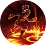
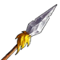
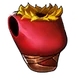
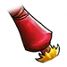
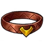
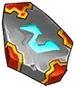
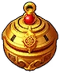

Hongyu is the 23th hero that you will unlock at stage 3600.
Abilities
| Quick Bite | |
|---|---|
| Thrust your spear, dealing 240% of your damage to your target. Cost: 30 Rage. | |
{kind=link}
{kind=link}
| Impale | |
|---|---|
 |
Brutally impale your target, dealing 230% of your damage. The target hit, bleeds for 120% of your damage for 3 seconds. 15 seconds cooldown. Cost: 60 Rage. |
{kind=link}
Gear
| Weapon | Chest | Boots | Ring | |
|---|---|---|---|---|
 |
 |
|||
| Wrist | Shoulder | Belt | Relic | |
 |
 |
|||
| Ankh | Rune | Idol | ||
 |
||||
| Talisman | Necklace | Trinket | ||
 |
{kind=link}
{kind=link}
{kind=link}
{kind=link}
{kind=link}
{kind=link}
{kind=link}
{kind=link}
{kind=link}
{kind=link}
{kind=link}
{kind=link}
{kind=link}
{kind=link}
Story
The Raging Fox
{kind=link}
{kind=link}
The raging fox
In the quiet village northeast of Maplemere, nestled within the Riverlands, there lived a girl named Hongyu. She was a ball of energy, always eager to explore the nooks and crannies of her surroundings, much to the dismay of her hard-working farmer neighbors. Climb the tallest tree in the village and end up stuck at the top for hours until somebody comes to her rescue? - check. Trying to establish and run a permanent colony of frogs in the small village pond, spending hours and hours around the puzzled amphibians? - check. Her parents worked the fields tirelessly, and she was much left to her own accord.
She was small in stature, mocked sometimes by the neighboring kids, but over time she stopped paying attention to these pricks and jibes. She remained undeterred, finding solace in the embrace of the lush forests surrounding her village, where she often spent hours and hours gathering beautiful flowers, tasteful berries and mushrooms along with other gifts the forest would provide. Summers came and went. Her parents died over a strange flu which decimated the village one winter. Left alone, she distanced more and more from the villagers, who would sometimes come to her for the medicinal herbs she gathered a-plenty in her wanderings, but otherwise leave Hongyu to grow and blossom alone.
One particular summer, it was in these woods that fate dealt her a fateful hand. Venturing too deep one day into the darker depth of the forest, she stumbled into a concealed bearpit - a deep one and full of stakes at the bottom. She broke her limbs in the fall and her shoulder was pierced by one of the stakes. Overcoming the initial shock, Hongyu opened her eyes to find that she was not the only prey in the pit - in the corner there was a small black ball of an injured fox, its fur matted with blood. As she reached out to help the creature, it lashed out in pain, biting her hand. Both fell exhausted and laid there side by side in the pool of their blood intermingling, consciousness slipping away.
She woke up by the sound of a human voice. Old grizzled face of a man was carefully studying her from above. - An interesting game, but not that I expected! - said an old huntsman, who came to check the trap. Weakly, Hongyu turned her head, only to find that the fox was gone and there were no signs of her ever being in the pit. Huntsman, who introduced himself as Derek, managed to heave Hongyu from the bearpit and helped her to his cabin in the woods.
The old hunter's cabin was an old one, as if it was here before Derek even started to call it his own. The exterior, weathered by the passage of time, boasted a sturdy, yet rustic design, its wooden beams adorned with creeping ivy. A small chimney puffed gentle curls of smoke, carrying the faint scent of seasoned wood into the crisp air. Surrounding the cabin, a menagerie of flora thrived, some meticulously cultivated by the huntsman, while others had grown wild and untamed, weaving a verdant tapestry around the dwelling. The porch, adorned with hand-carved totems and trinkets of forgotten hunts, exuded an earthy charm, welcoming visitors with the quiet wisdom of the forest itself.
Stepping inside, the humble abode unfolded into a haven of natural wonders. A warm hearth crackled softly, casting a soft, flickering glow that danced upon the walls adorned with furs and antlers. The aroma of forest herbs and drying plants wafted through the air, lending a soothing ambiance to the room. Various hunting trophies adorned the walls. Shelves lined with jars of preserved herbs and roots. Sunlight filtered through small, intricately designed windows, and fell onto intricate patterns on the worn wooden floor, giving the impression that the very soul of the forest had found a home within these walls.
For the next several weeks Hongyu was in and out of it, battling both her wound and a particularly strange fever she developed. Old hunter exhausted his knowledge of medicine - and sometimes his methods looked like they were fitting for and belong on the battlefield rather than deep ancient forest. But the young body of Hongyu healed itself, as weeks turned into months, although she remained weak for the time being. She started to help Derek with small chores, and later on the old hunter started to take her on his trips, teaching her how to hunt with a slingshot. It was a big sling staff, actually, which Derek carved from a young yew tree, covering it in strange runes and lines, muttering something about a walking stick. It served as such as well, but the old hunter made sure that Hongyu was capable of shooting it also, which she learned to do with some deadly precision.
Time passed. Hongyu became adept at using the slingshot staff, honing her skills in the art of hunting small game. However, the tranquility of her new life was shattered when one ominous day she discovered her mentor in the woods on the brink of death, lying mortally wounded. With his final breaths, he revealed encountering Undead creatures that had attacked him. Hongyu held him as he passed, promising to avenge his death. As he closed his eyes for the final time, she cried. She took his old silver medal Derek had around his neck on a leather string as a memento, and buried him in the deep forest, under the shade of the trees he had known so well, as it is appropriate for an old hunter to lay at rest where he spent his life.
Hongyu vowed to make the Undead pay for taking the life of the father he became. She hung the medal around her neck, and the silver medal burned to the touch of her breast, filling her with a cold fire of revenge. Hongyu returned to the cabin, gathered a few supplies and took off with her trusty sling staff, carefully locking the door to the cabin.
Her tracking abilities and cold reason of an experienced hunter allowed her to track more Undead as she ventured east. All fell down to her skills and the rage that fueled her. Hongyu's journey led her to the gates of the great city of Irongard, where she had an incident. A group of half-drunk city guards were amused by her and decided to throw a few jokes about a small girl and a big stick. Unwilling to tolerate the insults, she engaged in a skirmish, which resulted in her being thrown into the city's dungeons.
During her hearing in the morning, as the justice is swift in Irongard, she recounted her story, mentioning the name of her late mentor and his demise. Judge stopped her and asked a few questions, then with a heavy sigh admitted that he once knew a revered King ranger by the same name, who fits the description. In honor of his passing, and touched by Hongyu’s plight and resolve, the judge granted her a pardon on the condition that she would join one of the independent companies fighting the Undead menace behind enemy lines. With determination burning in her heart, Hongyu accepted the condition, ready to make her mark on the world and avenge the man she loved with a ferocity of a wounded animal. A fox, perhaps.'
The Enchanting Vixen


{kind=link}
The enchanting vixen
Some say the fox that shared Hongyu’s blood never left her, It merely changed shape. Now, when moonlight bathes the Riverlands in silver, she steps onto the stage like a living dream, her every glance a spell, her every smile a lure. Those who meet her gaze swear the world grows quieter, colors brighter, and reason a little hazy. But beneath the charm lies a clever huntress, always a step ahead, weaving beauty into strategy and seduction into deception. To cross her path is to wonder if you’ve glimpsed a goddess… or fallen for a fox’s clever game.